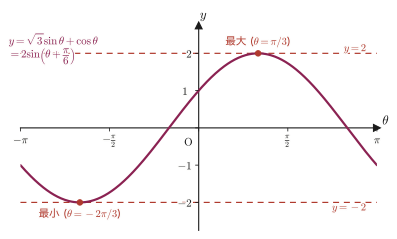

第5章三角関数の加法定理と諸公式
第3章では，直角三角形の辺の比として $\sin\theta,\cos\theta,\tan\theta$ を定義し，単位円上の点の座標として $(\cos\theta,\sin\theta)$ と読み替えた．そこでは角 $\theta$ はいつも1つだけだった．では，2つの角 $\alpha,\beta$ を足した角 $\alpha+\beta$ の三角比 $\cos(\alpha+\beta)$ は，$\cos\alpha$ と $\cos\beta$ からどう作れるだろうか．一番ありがちな誤答は「$\cos(\alpha+\beta)=\cos\alpha+\cos\beta$ だろう」というものだが，これは正しくない．実際 $\alpha=\beta=45^\circ$ とすると，左辺は $\cos90^\circ=0$ であるのに対し，右辺は $\cos45^\circ+\cos45^\circ=\sqrt2\approx1.41$ であり，まったく一致しない．では正しい関係式は何か——それを単位円の幾何学から導くのが本章の出発点であり，その結果を加法定理（addition theorem／addition formula）と呼ぶ．
加法定理の値打ちは，それ単体で終わらない点にある．本章では公式5.1〜5.23の合計23個の公式を扱うが，そのうち出発点となる4つの加法定理（$\cos(\alpha\pm\beta)$，$\sin(\alpha\pm\beta)$，公式5.1〜5.4）を除いた残り19個——正接の加法定理，2倍角の公式，半角の公式，3倍角の公式，積を和に直す公式，和を積に直す公式，そして波を1つの正弦波にまとめる「三角関数の合成」——は，実はすべて，たった4つの加法定理から機械的に導ける．公式を丸暗記するのではなく「加法定理さえ手元にあれば，あとはいつでも自分で作り直せる」という感覚を身につけることが，この章の一番の目標である．最後に学ぶ三角関数の合成 $a\sin\theta+b\cos\theta=\sqrt{a^2+b^2}\sin(\theta+\alpha)$ は，物理での振動の重ね合わせ（交流回路の位相，結晶格子の振動であるフォノンの解析など）で繰り返し使われる道具であり，さらに大学数学で複素数を学ぶと，この公式の背後に潜む構造がオイラーの公式 $e^{i\theta}=\cos\theta+i\sin\theta$（第21部・複素解析学の章で学ぶ）としてより美しい形に結晶化することになる．
- 加法定理4つ：$\cos(\alpha\pm\beta)$，$\sin(\alpha\pm\beta)$ の単位円による証明と，「$\cos(\alpha+\beta)=\cos\alpha+\cos\beta$」という誤答がなぜ間違っているか
- 正接の加法定理：$\tan(\alpha\pm\beta)$ とその定義域（$\cos\alpha\cos\beta\neq0$ など）
- 2倍角の公式：$\sin2\alpha,\cos2\alpha,\tan2\alpha$——加法定理に $\beta=\alpha$ を代入するだけで得られること
- 半角の公式：$\sin^2\frac{\alpha}{2},\cos^2\frac{\alpha}{2},\tan^2\frac{\alpha}{2}$——2乗の形でしか値が決まらないため，符号を別途考える必要があること
- 3倍角の公式：$\sin3\alpha,\cos3\alpha$——$\sin(2\alpha+\alpha)$ に2倍角の公式を代入して1つの変数だけの式に整理する技術
- 積→和の公式4つ，和→積の公式4つ——加法定理どうしを足し引きするだけで作れること
- 三角関数の合成 $a\sin\theta+b\cos\theta=\sqrt{a^2+b^2}\sin(\theta+\alpha)$ と，その最大値・最小値への応用
もとにしたノート：望月泰英『数学ノート 高校数学』 pp. 13–20．
5.1 加法定理を作る——余弦から
目標は，$\cos(\alpha+\beta)$ を $\cos\alpha,\sin\alpha,\cos\beta,\sin\beta$ だけを使った式で表すことである．鍵になるのは，単位円上の2点間の距離を2通りの方法で計算し，その結果を等しいと置くという戦略である．
5.1.1 2組の点を単位円上に置く
半径1の円（単位円）を2つ用意し，それぞれに次のように点を取る．
左の円では，点 $A(1,0)$（$x$軸の正の方向にある単位円上の点）を基準に取る．そこから反時計回りに角 $\alpha$ だけ回転した位置に補助的な破線の半径を引き，さらにそこから角 $\beta$ だけ回転した位置に点 $B$ を取る．つまり $B$ は $x$軸の正の方向から角 $\alpha+\beta$ だけ回転した点であるから，単位円上の点の座標の定義（第3章）より $B(\cos(\alpha+\beta),\sin(\alpha+\beta))$ である．
右の円では，点 $C$ を $x$軸の正の方向から角 $\beta$ だけ回転した位置に取り，$C(\cos\beta,\sin\beta)$ とする．また点 $D$ を $x$軸の正の方向から角 $-\alpha$（時計回りに角 $\alpha$）だけ回転した位置に取り，$D(\cos\alpha,-\sin\alpha)$ とする．ここで $\cos(-\alpha)=\cos\alpha$，$\sin(-\alpha)=-\sin\alpha$ を使った——角の符号を反転すると，単位円上の点は $x$軸に関して折り返されるので，$x$座標（$=\cos$）は変わらず，$y$座標（$=\sin$）だけ符号が変わるからである．
イメージ：なぜ $AB=CD$ が成り立つのか
左の図で，弦 $AB$ を見込む中心角 $\angle AOB$ は，$A$ から $B$ までの回転角そのものだから $\alpha+\beta$ である．右の図で，弦 $CD$ を見込む中心角 $\angle COD$ は，$D$（角 $-\alpha$ の位置）から $C$（角 $\beta$ の位置）までの回転角，すなわち $\beta-(-\alpha)=\alpha+\beta$ であり，やはり $\alpha+\beta$ である．さらに $OA=OB=OC=OD=1$（すべて単位円の半径）だから，三角形 $OAB$ と三角形 $OCD$ は「2辺とその間の角がそれぞれ等しい」（2辺挟角相等，SAS，中学数学既習）ので合同である．合同な三角形の対応する辺の長さは等しいから，$AB=CD$ が成り立つ．
これで準備が整った．$AB$ と $CD$ を，それぞれの座標から2点間の距離の公式 $\sqrt{(x_2-x_1)^2+(y_2-y_1)^2}$（三平方の定理）で計算し，$AB=CD$（両辺を2乗した $AB^2=CD^2$ でよい）とおけばよい．
5.1.2 $\cos(\alpha+\beta)$ の公式
公式5.1 余弦の加法定理（和）
$$ \begin{equation} \cos(\alpha+\beta)=\cos\alpha\cos\beta-\sin\alpha\sin\beta \label{eq:5-cos-sum} \end{equation} $$証明
2点間の距離の公式より，
$$ AB^2=\{\cos(\alpha+\beta)-1\}^2+\{\sin(\alpha+\beta)-0\}^2,\qquad CD^2=(\cos\alpha-\cos\beta)^2+(-\sin\alpha-\sin\beta)^2 . $$まず左辺を展開する．$\cos^2(\alpha+\beta)+\sin^2(\alpha+\beta)=1$（第3章の基本公式）を使うと，
$$ AB^2=\cos^2(\alpha+\beta)-2\cos(\alpha+\beta)+1+\sin^2(\alpha+\beta)=2-2\cos(\alpha+\beta) . $$次に右辺を展開する．$\cos^2\alpha+\sin^2\alpha=1$ と $\cos^2\beta+\sin^2\beta=1$ を使うと，
$$ \begin{aligned} CD^2&=\cos^2\alpha-2\cos\alpha\cos\beta+\cos^2\beta+\sin^2\alpha+2\sin\alpha\sin\beta+\sin^2\beta\\ &=(\cos^2\alpha+\sin^2\alpha)+(\cos^2\beta+\sin^2\beta)-2\cos\alpha\cos\beta+2\sin\alpha\sin\beta\\ &=2-2\cos\alpha\cos\beta+2\sin\alpha\sin\beta . \end{aligned} $$$AB=CD$ すなわち $AB^2=CD^2$ だから，
$$ 2-2\cos(\alpha+\beta)=2-2\cos\alpha\cos\beta+2\sin\alpha\sin\beta=2-2(\cos\alpha\cos\beta-\sin\alpha\sin\beta) . $$両辺から $2$ を引き，$-2$ で割ると，
$$ \cos(\alpha+\beta)=\cos\alpha\cos\beta-\sin\alpha\sin\beta $$を得る．
（証明終わり）
注意：$\cos(\alpha+\beta)\neq\cos\alpha+\cos\beta$
導いた式は「$\cos\alpha\cos\beta$」という積から「$\sin\alpha\sin\beta$」という積を引く形であり，$\cos\alpha+\cos\beta$ のような単純な和にはならない．たとえば $\alpha=\beta=45^\circ$ のとき，公式5.1なら $\cos90^\circ=\cos45^\circ\cos45^\circ-\sin45^\circ\sin45^\circ=\dfrac{\sqrt2}{2}\cdot\dfrac{\sqrt2}{2}-\dfrac{\sqrt2}{2}\cdot\dfrac{\sqrt2}{2}=\dfrac12-\dfrac12=0$ となり，実際の値 $\cos90^\circ=0$ と一致する．一方 $\cos45^\circ+\cos45^\circ=\sqrt2\approx1.41$ であり，まったく別の値になる．
5.1.3 $\cos(\alpha-\beta)$ の公式
次に $\cos(\alpha-\beta)$ を求める．新しく証明し直す必要はなく，公式5.1の $\beta$ を $-\beta$ に置き換えるだけでよい．
公式5.2 余弦の加法定理（差）
$$ \begin{equation} \cos(\alpha-\beta)=\cos\alpha\cos\beta+\sin\alpha\sin\beta \label{eq:5-cos-diff} \end{equation} $$証明
公式5.1（式\eqref{eq:5-cos-sum}）で $\beta$ を $-\beta$ に置き換える．$\cos(-\beta)=\cos\beta$，$\sin(-\beta)=-\sin\beta$ を使うと，
$$ \cos\{\alpha+(-\beta)\}=\cos\alpha\cos(-\beta)-\sin\alpha\sin(-\beta)=\cos\alpha\cos\beta-\sin\alpha\cdot(-\sin\beta) . $$左辺は $\cos(\alpha-\beta)$ そのものであり，右辺の $-\sin\alpha\cdot(-\sin\beta)$ は負号が2つ重なって $+\sin\alpha\sin\beta$ になるから，
$$ \cos(\alpha-\beta)=\cos\alpha\cos\beta+\sin\alpha\sin\beta $$を得る．
（証明終わり）
例題5.1 $\cos15^\circ$ の値
加法定理を用いて $\cos15^\circ$ の値を求めよ．
解答 $15^\circ=45^\circ-30^\circ$ と見て公式5.2を使う．$\alpha=45^\circ,\beta=30^\circ$ とすると，
$$ \cos15^\circ=\cos(45^\circ-30^\circ)=\cos45^\circ\cos30^\circ+\sin45^\circ\sin30^\circ . $$$\cos45^\circ=\dfrac{\sqrt2}{2}$，$\sin45^\circ=\dfrac{\sqrt2}{2}$，$\cos30^\circ=\dfrac{\sqrt3}{2}$，$\sin30^\circ=\dfrac12$ を代入すると，
$$ \cos15^\circ=\frac{\sqrt2}{2}\cdot\frac{\sqrt3}{2}+\frac{\sqrt2}{2}\cdot\frac12=\frac{\sqrt6}{4}+\frac{\sqrt2}{4}=\frac{\sqrt6+\sqrt2}{4}\approx0.9659 . $$（5.3節の例題5.6で，半角の公式を使っても同じ値になることを確かめる．）
5.2 正弦と正接の加法定理
余弦の加法定理（公式5.1・5.2）が手に入ったので，これを土台にして正弦・正接の加法定理を作る．新しく単位円の証明をやり直す必要はない——すでにある公式を式変形するだけでよい，というのがこの節の主題である．
5.2.1 余角の公式を思い出す
そのために使うのが，「余角（$90^\circ$ から引いた角，complementary angle）」の性質
$$ \cos\left(\frac{\pi}{2}-x\right)=\sin x,\qquad \sin\left(\frac{\pi}{2}-x\right)=\cos x $$である（直角三角形の2つの鋭角は和が $90^\circ$ になり，一方の正弦は他方の余弦に等しい，という中学校以来おなじみの関係を，第3章の定義3.1の言葉——正弦・余弦——で言い直したものである）．実はこの性質も公式5.2から導ける：公式5.2で $\alpha=\dfrac{\pi}{2},\ \beta=x$ とおくと，$\cos\dfrac{\pi}{2}=0,\ \sin\dfrac{\pi}{2}=1$ だから
$$ \cos\left(\frac{\pi}{2}-x\right)=\cos\frac{\pi}{2}\cos x+\sin\frac{\pi}{2}\sin x=0\cdot\cos x+1\cdot\sin x=\sin x $$となり，たしかに導ける．$\sin\left(\dfrac{\pi}{2}-x\right)=\cos x$ も同じ式の左右を入れ替えて $x\to\dfrac{\pi}{2}-x$ と読み替えれば得られる（$\dfrac{\pi}{2}-\left(\dfrac{\pi}{2}-x\right)=x$ に注意）．
5.2.2 $\sin(\alpha+\beta)$ と $\sin(\alpha-\beta)$
公式5.3 正弦の加法定理（和）
$$ \begin{equation} \sin(\alpha+\beta)=\sin\alpha\cos\beta+\cos\alpha\sin\beta \label{eq:5-sin-sum} \end{equation} $$証明
公式5.2（式\eqref{eq:5-cos-diff}）で $\alpha$ を $\dfrac{\pi}{2}-\alpha$ に置き換える．
$$ \cos\left\{\left(\frac{\pi}{2}-\alpha\right)-\beta\right\}=\cos\left(\frac{\pi}{2}-\alpha\right)\cos\beta+\sin\left(\frac{\pi}{2}-\alpha\right)\sin\beta . $$左辺は，かっこの中を整理すると $\dfrac{\pi}{2}-\alpha-\beta=\dfrac{\pi}{2}-(\alpha+\beta)$ であるから，5.2.1の余角の公式（$x=\alpha+\beta$ の場合）より
$$ \cos\left\{\frac{\pi}{2}-(\alpha+\beta)\right\}=\sin(\alpha+\beta) . $$右辺は，5.2.1の余角の公式（$x=\alpha$ の場合）$\cos\left(\dfrac{\pi}{2}-\alpha\right)=\sin\alpha,\ \sin\left(\dfrac{\pi}{2}-\alpha\right)=\cos\alpha$ を代入すると
$$ \sin\alpha\cos\beta+\cos\alpha\sin\beta $$になる．左辺と右辺を並べれば
$$ \sin(\alpha+\beta)=\sin\alpha\cos\beta+\cos\alpha\sin\beta $$を得る．
（証明終わり）
公式5.4 正弦の加法定理（差）
$$ \begin{equation} \sin(\alpha-\beta)=\sin\alpha\cos\beta-\cos\alpha\sin\beta \label{eq:5-sin-diff} \end{equation} $$証明
公式5.3（式\eqref{eq:5-sin-sum}）の $\beta$ を $-\beta$ に置き換える．$\cos(-\beta)=\cos\beta,\ \sin(-\beta)=-\sin\beta$ より，
$$ \sin\{\alpha+(-\beta)\}=\sin\alpha\cos(-\beta)+\cos\alpha\sin(-\beta)=\sin\alpha\cos\beta+\cos\alpha\cdot(-\sin\beta) . $$左辺は $\sin(\alpha-\beta)$ そのものだから，
$$ \sin(\alpha-\beta)=\sin\alpha\cos\beta-\cos\alpha\sin\beta $$を得る．
（証明終わり）
数学ノート：符号の覚え方
ここまでの4つの式を並べると，正弦の式は左辺の符号がそのまま右辺に現れ（「$\sin(\alpha-\beta)$」の$-$は右辺でも$-$），余弦の式は左辺の符号が右辺で反転する（「$\cos(\alpha-\beta)$」の$-$は右辺で$+$になる）というパターンが見える．暗記の助けにはなるが，忘れたときは自分で導けることの方がずっと大切である．
5.2.3 $\tan(\alpha+\beta)$ と $\tan(\alpha-\beta)$
正接は正弦・余弦の比 $\tan\theta=\dfrac{\sin\theta}{\cos\theta}$（第3章）で定義されるから，$\tan(\alpha+\beta)=\dfrac{\sin(\alpha+\beta)}{\cos(\alpha+\beta)}$ に公式5.1・5.3を代入し，分母・分子を $\cos\alpha\cos\beta$ で割って $\tan\alpha,\tan\beta$ だけの式に直せばよい（$\cos\alpha\neq0,\ \cos\beta\neq0$ を仮定する）．
公式5.5 正接の加法定理（和）
$$ \begin{equation} \tan(\alpha+\beta)=\frac{\tan\alpha+\tan\beta}{1-\tan\alpha\tan\beta} \label{eq:5-tan-sum} \end{equation} $$証明
$$ \tan(\alpha+\beta)=\frac{\sin(\alpha+\beta)}{\cos(\alpha+\beta)}=\frac{\sin\alpha\cos\beta+\cos\alpha\sin\beta}{\cos\alpha\cos\beta-\sin\alpha\sin\beta} . $$分母・分子を（ともに $0$ でないと仮定して）$\cos\alpha\cos\beta$ で割ると，各項が $\tan\alpha=\dfrac{\sin\alpha}{\cos\alpha}$ または $\tan\beta=\dfrac{\sin\beta}{\cos\beta}$ の形にそろう．
$$ \tan(\alpha+\beta)=\frac{\dfrac{\sin\alpha\cos\beta}{\cos\alpha\cos\beta}+\dfrac{\cos\alpha\sin\beta}{\cos\alpha\cos\beta}}{1-\dfrac{\sin\alpha\sin\beta}{\cos\alpha\cos\beta}}=\frac{\dfrac{\sin\alpha}{\cos\alpha}+\dfrac{\sin\beta}{\cos\beta}}{1-\dfrac{\sin\alpha}{\cos\alpha}\cdot\dfrac{\sin\beta}{\cos\beta}}=\frac{\tan\alpha+\tan\beta}{1-\tan\alpha\tan\beta} . $$（証明終わり）
注意：定義域
この公式は $\cos\alpha\neq0,\ \cos\beta\neq0$（すなわち $\tan\alpha,\tan\beta$ 自体が定義されること）に加えて，右辺の分母 $1-\tan\alpha\tan\beta\neq0$，つまり $\alpha+\beta\neq\dfrac{\pi}{2}+n\pi$（$n$ は整数）が必要である．実際 $\alpha+\beta=\dfrac{\pi}{2}$ のとき $\tan(\alpha+\beta)$ 自身が定義されないので，これは自然な制限である．
公式5.6 正接の加法定理（差）
$$ \begin{equation} \tan(\alpha-\beta)=\frac{\tan\alpha-\tan\beta}{1+\tan\alpha\tan\beta} \label{eq:5-tan-diff} \end{equation} $$証明
公式5.5（式\eqref{eq:5-tan-sum}）の $\beta$ を $-\beta$ に置き換える．$\tan(-\beta)=\dfrac{\sin(-\beta)}{\cos(-\beta)}=\dfrac{-\sin\beta}{\cos\beta}=-\tan\beta$ であるから，
$$ \tan(\alpha-\beta)=\tan\{\alpha+(-\beta)\}=\frac{\tan\alpha+(-\tan\beta)}{1-\tan\alpha\cdot(-\tan\beta)}=\frac{\tan\alpha-\tan\beta}{1+\tan\alpha\tan\beta} $$を得る．
（証明終わり）
例題5.2 $\sin105^\circ$ の値
加法定理を用いて $\sin105^\circ$ の値を求めよ．
解答 $105^\circ=60^\circ+45^\circ$ と見て公式5.3を使う．
$$ \sin105^\circ=\sin(60^\circ+45^\circ)=\sin60^\circ\cos45^\circ+\cos60^\circ\sin45^\circ . $$$\sin60^\circ=\dfrac{\sqrt3}{2},\ \cos60^\circ=\dfrac12,\ \cos45^\circ=\sin45^\circ=\dfrac{\sqrt2}{2}$ を代入すると，
$$ \sin105^\circ=\frac{\sqrt3}{2}\cdot\frac{\sqrt2}{2}+\frac12\cdot\frac{\sqrt2}{2}=\frac{\sqrt6}{4}+\frac{\sqrt2}{4}=\frac{\sqrt6+\sqrt2}{4} . $$これは例題5.1で求めた $\cos15^\circ$ とまったく同じ値である．実際 $\sin105^\circ=\sin(180^\circ-105^\circ)=\sin75^\circ=\cos(90^\circ-75^\circ)=\cos15^\circ$ なので，一致するのは当然である．
例題5.3 $\tan15^\circ$ の値
加法定理を用いて $\tan15^\circ$ の値を求めよ．
解答 $15^\circ=45^\circ-30^\circ$ と見て公式5.6を使う．$\tan45^\circ=1,\ \tan30^\circ=\dfrac{1}{\sqrt3}$ だから，
$$ \tan15^\circ=\tan(45^\circ-30^\circ)=\frac{\tan45^\circ-\tan30^\circ}{1+\tan45^\circ\tan30^\circ}=\frac{1-\dfrac{1}{\sqrt3}}{1+\dfrac{1}{\sqrt3}} . $$分母・分子に $\sqrt3$ を掛けて整理すると，
$$ \tan15^\circ=\frac{\sqrt3-1}{\sqrt3+1}=\frac{(\sqrt3-1)^2}{(\sqrt3+1)(\sqrt3-1)}=\frac{3-2\sqrt3+1}{3-1}=\frac{4-2\sqrt3}{2}=2-\sqrt3\approx0.2679 . $$（分母の有理化は，分母・分子に $\sqrt3-1$ を掛け，$(\sqrt3+1)(\sqrt3-1)=3-1=2$ を使った．）
例題5.4 恒等式 $\sin(\alpha+\beta)\sin(\alpha-\beta)=\sin^2\alpha-\sin^2\beta$ の証明
加法定理を用いて，任意の角 $\alpha,\beta$ に対して $\sin(\alpha+\beta)\sin(\alpha-\beta)=\sin^2\alpha-\sin^2\beta$ が成り立つことを証明せよ．
解答 左辺に公式5.3・5.4を代入する．
$$ \sin(\alpha+\beta)\sin(\alpha-\beta)=(\sin\alpha\cos\beta+\cos\alpha\sin\beta)(\sin\alpha\cos\beta-\cos\alpha\sin\beta) . $$右辺は $(X+Y)(X-Y)=X^2-Y^2$（$X=\sin\alpha\cos\beta,\ Y=\cos\alpha\sin\beta$ とした因数分解の公式を逆向きに使う形）だから，
$$ \sin(\alpha+\beta)\sin(\alpha-\beta)=\sin^2\alpha\cos^2\beta-\cos^2\alpha\sin^2\beta . $$目標は $\sin\alpha,\sin\beta$ だけの式にすることだから，基本公式 $\cos^2\beta=1-\sin^2\beta,\ \cos^2\alpha=1-\sin^2\alpha$（第3章）を代入して $\cos^2\alpha,\cos^2\beta$ を消す．
$$ \begin{aligned} \sin(\alpha+\beta)\sin(\alpha-\beta)&=\sin^2\alpha(1-\sin^2\beta)-(1-\sin^2\alpha)\sin^2\beta\\ &=(\sin^2\alpha-\sin^2\alpha\sin^2\beta)-(\sin^2\beta-\sin^2\alpha\sin^2\beta)\\ &=\sin^2\alpha-\sin^2\beta . \end{aligned} $$1行目から2行目は分配法則で展開し，2行目から3行目は $\sin^2\alpha\sin^2\beta$ どうしが $-\sin^2\alpha\sin^2\beta+\sin^2\alpha\sin^2\beta=0$ で打ち消し合うことを使った．よって $\sin(\alpha+\beta)\sin(\alpha-\beta)=\sin^2\alpha-\sin^2\beta$ が示された．
（証明終わり）
5.3 2倍角の公式と半角の公式
加法定理は $\alpha,\beta$ という2つの独立な角の公式だった．ここで思いきって $\beta=\alpha$ と特殊化すると，$\alpha+\beta=2\alpha$，つまり1つの角を2倍した角の公式が，何も新しい証明をせずに手に入る．
5.3.1 2倍角の公式
公式5.7 2倍角の公式（正弦）
$$ \begin{equation} \sin2\alpha=2\sin\alpha\cos\alpha \label{eq:5-double-sin} \end{equation} $$証明
公式5.3（式\eqref{eq:5-sin-sum}）で $\beta=\alpha$ とおく．
$$ \sin(\alpha+\alpha)=\sin\alpha\cos\alpha+\cos\alpha\sin\alpha=2\sin\alpha\cos\alpha . $$左辺は $\sin2\alpha$ そのものだから，$\sin2\alpha=2\sin\alpha\cos\alpha$ を得る．
（証明終わり）
公式5.8 2倍角の公式（余弦）
$$ \begin{equation} \cos2\alpha=2\cos^2\alpha-1=1-2\sin^2\alpha \label{eq:5-double-cos} \end{equation} $$証明
公式5.1（式\eqref{eq:5-cos-sum}）で $\beta=\alpha$ とおく．
$$ \cos(\alpha+\alpha)=\cos\alpha\cos\alpha-\sin\alpha\sin\alpha=\cos^2\alpha-\sin^2\alpha . $$ここまでは $\cos2\alpha=\cos^2\alpha-\sin^2\alpha$ という，$\cos$と$\sin$の両方が混ざった式である．これを整理して2通りの形にする．
(i) $\cos\alpha$ だけの式にする：基本公式 $\sin^2\alpha=1-\cos^2\alpha$（第3章）を代入すると，
$$ \cos2\alpha=\cos^2\alpha-(1-\cos^2\alpha)=2\cos^2\alpha-1 . $$(ii) $\sin\alpha$ だけの式にする：今度は基本公式 $\cos^2\alpha=1-\sin^2\alpha$ を代入すると，
$$ \cos2\alpha=(1-\sin^2\alpha)-\sin^2\alpha=1-2\sin^2\alpha . $$どちらも同じ $\cos2\alpha$ を表す式なので，$\cos2\alpha=2\cos^2\alpha-1=1-2\sin^2\alpha$ が成り立つ．
（証明終わり）
公式5.9 2倍角の公式（正接）
$$ \begin{equation} \tan2\alpha=\frac{2\tan\alpha}{1-\tan^2\alpha} \label{eq:5-double-tan} \end{equation} $$証明
公式5.5（式\eqref{eq:5-tan-sum}）で $\beta=\alpha$ とおく．
$$ \tan(\alpha+\alpha)=\frac{\tan\alpha+\tan\alpha}{1-\tan\alpha\tan\alpha}=\frac{2\tan\alpha}{1-\tan^2\alpha} $$を得る（$\cos\alpha\neq0$ かつ $1-\tan^2\alpha\neq0$，すなわち $\alpha\neq\dfrac{\pi}{4}+\dfrac{n\pi}{2}$ を仮定）．
（証明終わり）
数学ノート：加法定理さえ覚えれば全部作れる
公式5.7〜5.9は，加法定理に $\beta=\alpha$ を代入しただけで得られた．この先の半角・3倍角・積和・和積の公式も，すべて同じように「加法定理を代入し，$\sin^2+\cos^2=1$ で整理する」という同じ手順の繰り返しで作れる．丸暗記する公式の数を増やす必要はなく，加法定理4つ（公式5.1〜5.4）と $\sin^2\theta+\cos^2\theta=1$ さえ手元にあれば，あとはその場で導ける．
例題5.5 2倍角の公式の利用
$0\lt\theta\lt\dfrac{\pi}{2}$ で $\cos\theta=\dfrac35$ のとき，$\sin2\theta,\cos2\theta,\tan2\theta$ の値を求めよ．
解答 $0\lt\theta\lt\dfrac{\pi}{2}$（第1象限）なので $\sin\theta>0$．$\sin^2\theta=1-\cos^2\theta=1-\dfrac{9}{25}=\dfrac{16}{25}$ より $\sin\theta=\dfrac45$．公式5.7・5.8・5.9に代入すると，
$$ \sin2\theta=2\sin\theta\cos\theta=2\cdot\frac45\cdot\frac35=\frac{24}{25}, $$ $$ \cos2\theta=2\cos^2\theta-1=2\cdot\frac{9}{25}-1=\frac{18}{25}-\frac{25}{25}=-\frac{7}{25}, $$ $$ \tan2\theta=\frac{\sin2\theta}{\cos2\theta}=\frac{24/25}{-7/25}=-\frac{24}{7} . $$（$\cos2\theta$ は $1-2\sin^2\theta=1-2\cdot\dfrac{16}{25}=1-\dfrac{32}{25}=-\dfrac{7}{25}$ と計算しても同じ値になる．$\tan2\theta$ は $\dfrac{2\tan\theta}{1-\tan^2\theta}$ に $\tan\theta=\dfrac{4/5}{3/5}=\dfrac43$ を代入しても $\dfrac{2\cdot4/3}{1-16/9}=\dfrac{8/3}{-7/9}=-\dfrac{24}{7}$ となり一致する．$\cos2\theta\lt0$ なので $2\theta$ は第2象限にあることもわかる．）
5.3.2 半角の公式
2倍角の公式5.8は $\cos2\theta$ と $\cos^2\theta$（または $\sin^2\theta$）の関係を与えていた．この式を逆向きに読む——つまり $\sin^2\theta,\cos^2\theta$ を $\cos2\theta$ で表す——ことにすると，「半分の角の三角比の2乗」を求める公式になる．
公式5.10 半角の公式（正弦の2乗）
$$ \begin{equation} \sin^2\frac{\alpha}{2}=\frac{1-\cos\alpha}{2} \label{eq:5-half-sin2} \end{equation} $$証明
公式5.8の $\cos2\theta=1-2\sin^2\theta$ を $\sin^2\theta$ について解くと，
$$ 2\sin^2\theta=1-\cos2\theta,\qquad \sin^2\theta=\frac{1-\cos2\theta}{2} . $$この式は角 $\theta$ について成り立つ関係であり，$\theta$ にどんな角を代入してもよい．そこで $\theta=\dfrac{\alpha}{2}$（つまり $2\theta=\alpha$）とおくと，
$$ \sin^2\frac{\alpha}{2}=\frac{1-\cos\alpha}{2} $$を得る．
（証明終わり）
公式5.11 半角の公式（余弦の2乗）
$$ \begin{equation} \cos^2\frac{\alpha}{2}=\frac{1+\cos\alpha}{2} \label{eq:5-half-cos2} \end{equation} $$証明
公式5.8の $\cos2\theta=2\cos^2\theta-1$ を $\cos^2\theta$ について解くと，$\cos^2\theta=\dfrac{1+\cos2\theta}{2}$．$\theta=\dfrac{\alpha}{2}$ とおくと，
$$ \cos^2\frac{\alpha}{2}=\frac{1+\cos\alpha}{2} $$を得る．
（証明終わり）
公式5.12 半角の公式（正接の2乗）
$$ \begin{equation} \tan^2\frac{\alpha}{2}=\frac{1-\cos\alpha}{1+\cos\alpha} \label{eq:5-half-tan2} \end{equation} $$証明
$\tan^2\dfrac{\alpha}{2}=\dfrac{\sin^2(\alpha/2)}{\cos^2(\alpha/2)}$ に公式5.10・5.11（式\eqref{eq:5-half-sin2}，\eqref{eq:5-half-cos2}）を代入すると，
$$ \tan^2\frac{\alpha}{2}=\dfrac{\dfrac{1-\cos\alpha}{2}}{\dfrac{1+\cos\alpha}{2}}=\frac{1-\cos\alpha}{1+\cos\alpha} $$を得る（$\cos\alpha\neq-1$ を仮定）．
（証明終わり）
注意：半角の公式は「2乗」しか教えてくれない
公式5.10〜5.12は $\sin^2(\alpha/2),\cos^2(\alpha/2),\tan^2(\alpha/2)$ という2乗の値だけを与える．$\sin(\alpha/2)$ 自身の符号は，$\dfrac{\alpha}{2}$ がどの象限にあるかを別に調べて，$+$ か $-$ かを自分で判断しなければならない（2乗すると符号の情報が失われるため）．例題5.6でこの判断を実際にやってみる．
例題5.6 半角の公式で $\cos15^\circ$ を求め，例題5.1と比較する
半角の公式を用いて $\cos15^\circ$ の値を求め，例題5.1の結果と一致することを確認せよ．
解答 $15^\circ=\dfrac{30^\circ}{2}$ と見て，公式5.11に $\alpha=30^\circ$ を代入する．$\cos30^\circ=\dfrac{\sqrt3}{2}$ だから，
$$ \cos^2 15^\circ=\frac{1+\cos30^\circ}{2}=\frac{1+\dfrac{\sqrt3}{2}}{2}=\frac{2+\sqrt3}{4} . $$ここで符号を決める：$0^\circ\lt15^\circ\lt90^\circ$（第1象限）だから $\cos15^\circ>0$，つまり正の平方根を取る．
$$ \cos15^\circ=\sqrt{\frac{2+\sqrt3}{4}}=\frac{\sqrt{2+\sqrt3}}{2} . $$この形が例題5.1の $\dfrac{\sqrt6+\sqrt2}{4}$ と同じ値であることを確かめよう．$\left(\dfrac{\sqrt6+\sqrt2}{4}\right)^2=\dfrac{6+2\sqrt{12}+2}{16}=\dfrac{8+4\sqrt3}{16}=\dfrac{2+\sqrt3}{4}$ となり，たしかに $\cos^2 15^\circ=\dfrac{2+\sqrt3}{4}$ に一致する．しかも $\dfrac{\sqrt6+\sqrt2}{4}>0$ なので，符号も含めて例題5.1の値と完全に一致する．
5.4 3倍角の公式
$3\alpha=2\alpha+\alpha$ と見れば，2倍角の公式（既知）と加法定理を組み合わせて $\sin3\alpha,\cos3\alpha$ が作れる．ここでのポイントは，2倍角の公式 $\cos2\alpha=2\cos^2\alpha-1=1-2\sin^2\alpha$ に2通りの表し方があったことを使い分ける点である．
公式5.13 3倍角の公式（正弦）
$$ \begin{equation} \sin3\alpha=3\sin\alpha-4\sin^3\alpha \label{eq:5-triple-sin} \end{equation} $$証明
加法定理（公式5.3）より，
$$ \sin3\alpha=\sin(2\alpha+\alpha)=\sin2\alpha\cos\alpha+\cos2\alpha\sin\alpha . $$目標は $\sin\alpha$ だけの式にすることだから，$\cos2\alpha$ は $\sin$ だけで書ける形 $\cos2\alpha=1-2\sin^2\alpha$（公式5.8の2つ目の形）を選んで代入する．また $\sin2\alpha=2\sin\alpha\cos\alpha$（公式5.7）も代入すると，
$$ \sin3\alpha=2\sin\alpha\cos\alpha\cdot\cos\alpha+(1-2\sin^2\alpha)\sin\alpha=2\sin\alpha\cos^2\alpha+(1-2\sin^2\alpha)\sin\alpha . $$まだ $\cos^2\alpha$ が残っているので，$\cos^2\alpha=1-\sin^2\alpha$（基本公式）を代入して消す．
$$ \begin{aligned} \sin3\alpha&=2\sin\alpha(1-\sin^2\alpha)+(1-2\sin^2\alpha)\sin\alpha\\ &=(2\sin\alpha-2\sin^3\alpha)+(\sin\alpha-2\sin^3\alpha)\\ &=3\sin\alpha-4\sin^3\alpha . \end{aligned} $$1行目から2行目は分配法則で展開し，2行目から3行目は $\sin\alpha$ の項どうし（$2\sin\alpha+\sin\alpha=3\sin\alpha$），$\sin^3\alpha$ の項どうし（$-2\sin^3\alpha-2\sin^3\alpha=-4\sin^3\alpha$）をそれぞれまとめた．
（証明終わり）
公式5.14 3倍角の公式（余弦）
$$ \begin{equation} \cos3\alpha=-3\cos\alpha+4\cos^3\alpha \label{eq:5-triple-cos} \end{equation} $$証明
加法定理（公式5.1）より，
$$ \cos3\alpha=\cos(2\alpha+\alpha)=\cos2\alpha\cos\alpha-\sin2\alpha\sin\alpha . $$今度は $\cos\alpha$ だけの式にしたいので，$\cos2\alpha=2\cos^2\alpha-1$（公式5.8の1つ目の形）を選んで代入する．$\sin2\alpha=2\sin\alpha\cos\alpha$ も代入すると，
$$ \cos3\alpha=(2\cos^2\alpha-1)\cos\alpha-2\sin\alpha\cos\alpha\cdot\sin\alpha=2\cos^3\alpha-\cos\alpha-2\cos\alpha\sin^2\alpha . $$残った $\sin^2\alpha$ に $\sin^2\alpha=1-\cos^2\alpha$ を代入して消す．
$$ \begin{aligned} \cos3\alpha&=2\cos^3\alpha-\cos\alpha-2\cos\alpha(1-\cos^2\alpha)\\ &=2\cos^3\alpha-\cos\alpha-2\cos\alpha+2\cos^3\alpha\\ &=4\cos^3\alpha-3\cos\alpha=-3\cos\alpha+4\cos^3\alpha . \end{aligned} $$（証明終わり）
イメージ：どちらの2倍角の式を選ぶか
公式5.8には $\cos2\alpha=2\cos^2\alpha-1$ と $\cos2\alpha=1-2\sin^2\alpha$ の2つの表し方があった．$\sin3\alpha$（$\sin$だけの式にしたい）を作るときは$\sin$の形を，$\cos3\alpha$（$\cos$だけの式にしたい）を作るときは$\cos$の形を選ぶ——これは「目標の変数に合わせて，等価な表現の中から都合のよいものを選ぶ」という，これから先の数学（特に大学の微積分や物理の計算）でも繰り返し使うことになる基本技術である．
例題5.7 3倍角の公式の検証
$\alpha=30^\circ$（$\sin\alpha=\dfrac12,\ \cos\alpha=\dfrac{\sqrt3}{2}$）のとき，公式5.13・5.14を用いて $\sin3\alpha,\cos3\alpha$ を計算し，$3\alpha=90^\circ$ の三角比 $\sin90^\circ=1,\ \cos90^\circ=0$ と一致することを確かめよ．
解答 公式5.13に代入すると，
$$ \sin3\alpha=3\sin\alpha-4\sin^3\alpha=3\cdot\frac12-4\cdot\left(\frac12\right)^3=\frac32-4\cdot\frac18=\frac32-\frac12=1 . $$公式5.14に代入すると，
$$ \cos3\alpha=-3\cos\alpha+4\cos^3\alpha=-3\cdot\frac{\sqrt3}{2}+4\cdot\left(\frac{\sqrt3}{2}\right)^3=-\frac{3\sqrt3}{2}+4\cdot\frac{3\sqrt3}{8}=-\frac{3\sqrt3}{2}+\frac{3\sqrt3}{2}=0 . $$たしかに $\sin(3\times30^\circ)=\sin90^\circ=1$，$\cos(3\times30^\circ)=\cos90^\circ=0$ と一致した．
5.5 積→和の公式
加法定理4つを見比べると，$\sin(\alpha+\beta)$ と $\sin(\alpha-\beta)$ には $\sin\alpha\cos\beta$ という共通の項がある．この2つの式を足したり引いたりすると，共通しない項が消えて，「積の形」と「和の形」を結ぶ新しい関係が見えてくる．
公式5.15 積→和（$\sin\times\cos$）
$$ \begin{equation} \sin\alpha\cos\beta=\frac12\{\sin(\alpha+\beta)+\sin(\alpha-\beta)\} \label{eq:5-prod-sc} \end{equation} $$証明
公式5.3と公式5.4を並べて書く．
$$ \sin(\alpha+\beta)=\sin\alpha\cos\beta+\cos\alpha\sin\beta,\qquad \sin(\alpha-\beta)=\sin\alpha\cos\beta-\cos\alpha\sin\beta . $$両辺どうしを足すと，$\cos\alpha\sin\beta$ の項が $+\cos\alpha\sin\beta$ と $-\cos\alpha\sin\beta$ で打ち消し合って消える．
$$ \sin(\alpha+\beta)+\sin(\alpha-\beta)=(\sin\alpha\cos\beta+\cos\alpha\sin\beta)+(\sin\alpha\cos\beta-\cos\alpha\sin\beta)=2\sin\alpha\cos\beta . $$両辺を2で割ると，
$$ \sin\alpha\cos\beta=\frac12\{\sin(\alpha+\beta)+\sin(\alpha-\beta)\} $$を得る．
（証明終わり）
公式5.16 積→和（$\cos\times\sin$）
$$ \begin{equation} \cos\alpha\sin\beta=\frac12\{\sin(\alpha+\beta)-\sin(\alpha-\beta)\} \label{eq:5-prod-cs} \end{equation} $$証明
公式5.15（式\eqref{eq:5-prod-sc}）で $\alpha$ と $\beta$ を入れ替える．
$$ \sin\beta\cos\alpha=\frac12\{\sin(\beta+\alpha)+\sin(\beta-\alpha)\} . $$左辺の $\sin\beta\cos\alpha$ は $\cos\alpha\sin\beta$ と同じものである．右辺は，$\sin(\beta+\alpha)=\sin(\alpha+\beta)$（足し算の順序を変えても同じ）であり，$\sin(\beta-\alpha)=\sin\{-(\alpha-\beta)\}=-\sin(\alpha-\beta)$（正弦は奇関数，すなわち符号を反転すると値も反転する）だから，
$$ \cos\alpha\sin\beta=\frac12\{\sin(\alpha+\beta)+(-\sin(\alpha-\beta))\}=\frac12\{\sin(\alpha+\beta)-\sin(\alpha-\beta)\} $$を得る．
（証明終わり）
公式5.17 積→和（$\cos\times\cos$）
$$ \begin{equation} \cos\alpha\cos\beta=\frac12\{\cos(\alpha+\beta)+\cos(\alpha-\beta)\} \label{eq:5-prod-cc} \end{equation} $$証明
公式5.1と公式5.2を並べて足す．$\sin\alpha\sin\beta$ の項が打ち消し合う．
$$ \cos(\alpha+\beta)+\cos(\alpha-\beta)=(\cos\alpha\cos\beta-\sin\alpha\sin\beta)+(\cos\alpha\cos\beta+\sin\alpha\sin\beta)=2\cos\alpha\cos\beta . $$両辺を2で割ると，$\cos\alpha\cos\beta=\dfrac12\{\cos(\alpha+\beta)+\cos(\alpha-\beta)\}$ を得る．
（証明終わり）
公式5.18 積→和（$\sin\times\sin$）
$$ \begin{equation} \sin\alpha\sin\beta=-\frac12\{\cos(\alpha+\beta)-\cos(\alpha-\beta)\} \label{eq:5-prod-ss} \end{equation} $$証明
公式5.17（式\eqref{eq:5-prod-cc}）で $\alpha\to\dfrac{\pi}{2}-\alpha,\ \beta\to\dfrac{\pi}{2}-\beta$ と置き換える．
$$ \cos\left(\frac{\pi}{2}-\alpha\right)\cos\left(\frac{\pi}{2}-\beta\right)=\frac12\left[\cos\left\{\left(\frac{\pi}{2}-\alpha\right)+\left(\frac{\pi}{2}-\beta\right)\right\}+\cos\left\{\left(\frac{\pi}{2}-\alpha\right)-\left(\frac{\pi}{2}-\beta\right)\right\}\right] . $$左辺は余角の公式（5.2.1節）$\cos\left(\dfrac{\pi}{2}-\alpha\right)=\sin\alpha,\ \cos\left(\dfrac{\pi}{2}-\beta\right)=\sin\beta$ より $\sin\alpha\sin\beta$ になる．
右辺の1つ目のかっこの中は $\left(\dfrac{\pi}{2}-\alpha\right)+\left(\dfrac{\pi}{2}-\beta\right)=\pi-(\alpha+\beta)$ である．ここで $\cos(\pi-x)=-\cos x$ という新しい事実が必要になる——これも公式5.2（$\cos(\alpha-\beta)$ の余弦の加法定理）で $\alpha=\pi,\beta=x$ とおけば $\cos(\pi-x)=\cos\pi\cos x+\sin\pi\sin x=(-1)\cos x+0=-\cos x$ と，やはり加法定理だけから導ける．したがって
$$ \cos\{\pi-(\alpha+\beta)\}=-\cos(\alpha+\beta) . $$右辺の2つ目のかっこの中は $\left(\dfrac{\pi}{2}-\alpha\right)-\left(\dfrac{\pi}{2}-\beta\right)=\beta-\alpha=-(\alpha-\beta)$ であり，$\cos(-x)=\cos x$（余弦は偶関数）だから
$$ \cos\{-(\alpha-\beta)\}=\cos(\alpha-\beta) . $$以上をまとめると，
$$ \sin\alpha\sin\beta=\frac12\{-\cos(\alpha+\beta)+\cos(\alpha-\beta)\}=-\frac12\{\cos(\alpha+\beta)-\cos(\alpha-\beta)\} $$を得る．
（証明終わり）
| 積の形 | 和・差の形 |
|---|---|
| $\sin\alpha\cos\beta$ | $\dfrac12\{\sin(\alpha+\beta)+\sin(\alpha-\beta)\}$ |
| $\cos\alpha\sin\beta$ | $\dfrac12\{\sin(\alpha+\beta)-\sin(\alpha-\beta)\}$ |
| $\cos\alpha\cos\beta$ | $\dfrac12\{\cos(\alpha+\beta)+\cos(\alpha-\beta)\}$ |
| $\sin\alpha\sin\beta$ | $-\dfrac12\{\cos(\alpha+\beta)-\cos(\alpha-\beta)\}$ |
例題5.8 $\sin75^\circ\cos15^\circ$ の値
積→和の公式を用いて $\sin75^\circ\cos15^\circ$ の値を求めよ．
解答 公式5.15に $\alpha=75^\circ,\beta=15^\circ$ を代入する．
$$ \sin75^\circ\cos15^\circ=\frac12\{\sin(75^\circ+15^\circ)+\sin(75^\circ-15^\circ)\}=\frac12\{\sin90^\circ+\sin60^\circ\} . $$$\sin90^\circ=1,\ \sin60^\circ=\dfrac{\sqrt3}{2}$ を代入すると，
$$ \sin75^\circ\cos15^\circ=\frac12\left(1+\frac{\sqrt3}{2}\right)=\frac12+\frac{\sqrt3}{4}=\frac{2+\sqrt3}{4}\approx0.933 . $$5.6 和→積の公式
5.5節の公式は「積→和」という向きだった．同じ式を，今度は逆向き——「和→積」——に読み替える．そのために，$\alpha+\beta$ と $\alpha-\beta$ という2つの角に，新しい名前 $A,B$ を付ける．
$$ A=\alpha+\beta,\qquad B=\alpha-\beta $$5.6.1 $\alpha,\beta$ を $A,B$ で表す
この先の計算では，逆に $\alpha,\beta$ を $A,B$ の式で表す必要がある．$A=\alpha+\beta$ と $B=\alpha-\beta$ を，$\alpha,\beta$ についての連立方程式とみて解く．2つの式の辺々を足すと $\beta$ が消えて，
$$ A+B=(\alpha+\beta)+(\alpha-\beta)=2\alpha,\qquad \therefore\ \alpha=\frac{A+B}{2} . $$辺々を引くと $\alpha$ が消えて，
$$ A-B=(\alpha+\beta)-(\alpha-\beta)=2\beta,\qquad \therefore\ \beta=\frac{A-B}{2} $$が得られる．この $\alpha=\dfrac{A+B}{2},\ \beta=\dfrac{A-B}{2}$ という置き換えを，5.5節の証明で使った「2つの式を足す・引く」計算の結果にそのまま代入する．
公式5.19 和→積（正弦の和）
$$ \begin{equation} \sin A+\sin B=2\sin\frac{A+B}{2}\cos\frac{A-B}{2} \label{eq:5-sum-ss} \end{equation} $$証明
公式5.15の証明の途中で得た $\sin(\alpha+\beta)+\sin(\alpha-\beta)=2\sin\alpha\cos\beta$ が出発点である．左辺に $A=\alpha+\beta,\ B=\alpha-\beta$ を代入すると
$$ \sin A+\sin B=2\sin\alpha\cos\beta $$となる．さらに右辺の $\alpha,\beta$ に，5.6.1で求めた $\alpha=\dfrac{A+B}{2},\ \beta=\dfrac{A-B}{2}$ を代入すると，
$$ \sin A+\sin B=2\sin\frac{A+B}{2}\cos\frac{A-B}{2} $$を得る．
（証明終わり）
公式5.20 和→積（正弦の差）
$$ \begin{equation} \sin A-\sin B=2\cos\frac{A+B}{2}\sin\frac{A-B}{2} \label{eq:5-sum-sd} \end{equation} $$証明
今度は公式5.16の証明の出発点 $\sin(\alpha+\beta)-\sin(\alpha-\beta)=2\cos\alpha\sin\beta$ を使う．$A,B$ を代入すると $\sin A-\sin B=2\cos\alpha\sin\beta$，さらに $\alpha=\dfrac{A+B}{2},\ \beta=\dfrac{A-B}{2}$ を代入して，
$$ \sin A-\sin B=2\cos\frac{A+B}{2}\sin\frac{A-B}{2} $$を得る．
（証明終わり）
公式5.21 和→積（余弦の和）
$$ \begin{equation} \cos A+\cos B=2\cos\frac{A+B}{2}\cos\frac{A-B}{2} \label{eq:5-sum-cc} \end{equation} $$証明
公式5.17の証明の出発点 $\cos(\alpha+\beta)+\cos(\alpha-\beta)=2\cos\alpha\cos\beta$ に，同じ置き換えを行う．
$$ \cos A+\cos B=2\cos\alpha\cos\beta=2\cos\frac{A+B}{2}\cos\frac{A-B}{2} $$を得る．
（証明終わり）
公式5.22 和→積（余弦の差）
$$ \begin{equation} \cos A-\cos B=-2\sin\frac{A+B}{2}\sin\frac{A-B}{2} \label{eq:5-sum-cd} \end{equation} $$証明
公式5.18の証明で得た $\cos(\alpha+\beta)-\cos(\alpha-\beta)=-2\sin\alpha\sin\beta$（式\eqref{eq:5-prod-ss}を導く途中の関係）に，同じ置き換えを行う．
$$ \cos A-\cos B=-2\sin\alpha\sin\beta=-2\sin\frac{A+B}{2}\sin\frac{A-B}{2} $$を得る．
（証明終わり）
| 和・差の形 | 積の形 |
|---|---|
| $\sin A+\sin B$ | $2\sin\dfrac{A+B}{2}\cos\dfrac{A-B}{2}$ |
| $\sin A-\sin B$ | $2\cos\dfrac{A+B}{2}\sin\dfrac{A-B}{2}$ |
| $\cos A+\cos B$ | $2\cos\dfrac{A+B}{2}\cos\dfrac{A-B}{2}$ |
| $\cos A-\cos B$ | $-2\sin\dfrac{A+B}{2}\sin\dfrac{A-B}{2}$ |
例題5.9 $\sin75^\circ+\sin15^\circ$ の値
和→積の公式を用いて $\sin75^\circ+\sin15^\circ$ の値を求めよ．
解答 $A=75^\circ,B=15^\circ$ として公式5.19に代入する．$\dfrac{A+B}{2}=45^\circ,\ \dfrac{A-B}{2}=30^\circ$ だから，
$$ \sin75^\circ+\sin15^\circ=2\sin45^\circ\cos30^\circ=2\cdot\frac{\sqrt2}{2}\cdot\frac{\sqrt3}{2}=\frac{\sqrt6}{2}\approx1.225 . $$5.7 三角関数の合成
最後に扱うのは，$a\sin\theta+b\cos\theta$（$a,b$ は $\theta$ によらない定数）という式を，1つの正弦関数にまとめる技術である．たとえば $\sqrt3\sin\theta+\cos\theta$ は，$\theta$ を動かすとどんな値を取り，最大値・最小値はいくつか——これを個別に調べるのではなく，$r\sin(\theta+\alpha)$ という見慣れた形に直してしまえば，最大値が $r$，最小値が $-r$ であることが一目でわかる．この変形を三角関数の合成（synthesis of trigonometric functions）と呼ぶ．
5.7.1 合成の公式
公式5.23 三角関数の合成
$$ \begin{equation} a\sin\theta+b\cos\theta=\sqrt{a^2+b^2}\,\sin(\theta+\alpha),\qquad \sin\alpha=\frac{b}{\sqrt{a^2+b^2}},\ \ \cos\alpha=\frac{a}{\sqrt{a^2+b^2}} \label{eq:5-composite} \end{equation} $$座標平面上に，座標が $(a,b)$ である点 $P$ を取り，線分 $OP$ が $x$軸の正の向きとなす角を $\alpha$，$OP$ の長さを $r$ とする．
証明
三平方の定理（原点 $O(0,0)$ と $P(a,b)$ の距離を求めたもの）より $r=\sqrt{a^2+b^2}$ である．また直角三角形の辺の比（第3章）から，
$$ a=r\cos\alpha,\qquad b=r\sin\alpha $$が成り立つ．よって，
$$ \begin{aligned} a\sin\theta+b\cos\theta&=(r\cos\alpha)\sin\theta+(r\sin\alpha)\cos\theta\\ &=r(\sin\theta\cos\alpha+\cos\theta\sin\alpha)\\ &=r\sin(\theta+\alpha)\qquad(\text{公式5.3より})\\ &=\sqrt{a^2+b^2}\,\sin(\theta+\alpha) \end{aligned} $$を得る．2行目から3行目は，公式5.3 $\sin(X+Y)=\sin X\cos Y+\cos X\sin Y$ で $X=\theta,Y=\alpha$ とした形にちょうど一致することを見抜いて，逆向きに使った．
（証明終わり）
イメージ：なぜ「そのような角 $\alpha$」がいつも存在するのか
証明では $\cos\alpha=\dfrac{a}{r},\ \sin\alpha=\dfrac{b}{r}$ を満たす角 $\alpha$ の存在を当然のように使ったが，これは確認が必要である．$r=\sqrt{a^2+b^2}$（$r>0$，ただし $a=b=0$ の場合は考えない）なので，
$$ \left(\frac{a}{r}\right)^2+\left(\frac{b}{r}\right)^2=\frac{a^2+b^2}{r^2}=\frac{a^2+b^2}{a^2+b^2}=1 . $$つまり点 $\left(\dfrac{a}{r},\dfrac{b}{r}\right)$ は単位円上にある．単位円上のどんな点も，$x$軸の正方向からの回転角 $\alpha$ を使って $(\cos\alpha,\sin\alpha)$ と表せる（第3章）から，この $\alpha$ が求める角である．
数学ノート：$\alpha$ がどの象限にあるかの見分け方
$\cos\alpha=\dfrac{a}{r},\ \sin\alpha=\dfrac{b}{r}$ で $r>0$ だから，$\alpha$ の象限は $a,b$ の符号だけで決まる（分母の $r$ は正なので符号に影響しない）．
- $a>0,\ b>0$：$\cos\alpha>0,\sin\alpha>0$ なので $\alpha$ は第1象限（$0\lt\alpha\lt\frac{\pi}{2}$）．
- $a\lt0,\ b>0$：$\alpha$ は第2象限（$\frac{\pi}{2}\lt\alpha\lt\pi$）．
- $a\lt0,\ b\lt0$：$\alpha$ は第3象限（$\pi\lt\alpha\lt\frac{3\pi}{2}$）．
- $a>0,\ b\lt0$：$\alpha$ は第4象限（$-\frac{\pi}{2}\lt\alpha\lt0$）．
象限がわかったら，$\tan\alpha=\dfrac{b}{a}$（$a\neq0$ のとき）から角の大きさを求め，象限の条件に合う方を選べばよい．
例題5.10 図5.3を読み取って $\alpha$ の象限を判断する
図5.3のように点 $P(a,b)$ を取り，線分 $OP$ が $x$軸の正の向きとなす角を $\alpha$ とする．$a=-\sqrt3,\ b=-1$ のとき，図5.3を思い浮かべて（$a,b$ がともに負の点 $P$ が座標平面のどの部分にあるかをまず図でイメージして）$\alpha$ がどの象限にあるかを判断し，そのあとで $r=OP$ と $\alpha$（$0\le\alpha\lt2\pi$）の値を求めよ．
解答 $a=-\sqrt3\lt0,\ b=-1\lt0$ であるから，点 $P(a,b)=P(-\sqrt3,-1)$ は $x$座標・$y$座標がともに負の点，すなわち第3象限にある．図5.3で点 $P$ を第1象限から第3象限へ動かして思い浮かべると，線分 $OP$ が $x$軸の正の向きとなす角 $\alpha$ も，5.7.1の数学ノートの表にある通り第3象限（$\pi\lt\alpha\lt\dfrac{3\pi}{2}$）に入ることが図から読み取れる．
次に大きさを求める．$r=\sqrt{a^2+b^2}=\sqrt{(-\sqrt3)^2+(-1)^2}=\sqrt{3+1}=2$．よって，
$$ \cos\alpha=\frac{a}{r}=\frac{-\sqrt3}{2}=-\frac{\sqrt3}{2},\qquad \sin\alpha=\frac{b}{r}=\frac{-1}{2}=-\frac12 . $$$\cos\alpha=-\dfrac{\sqrt3}{2},\sin\alpha=-\dfrac12$ を満たし，かつ第3象限（$\pi\lt\alpha\lt\dfrac{3\pi}{2}$）にある角は，$\cos\dfrac{\pi}{6}=\dfrac{\sqrt3}{2},\sin\dfrac{\pi}{6}=\dfrac12$ に対して $x$軸方向にも$y$軸方向にも符号を反転させた，$\alpha=\pi+\dfrac{\pi}{6}=\dfrac{7\pi}{6}$（$210^\circ$）である．最初に図から「第3象限にある」と見当をつけていたので，$\alpha=\dfrac{7\pi}{6}$ が象限の条件と矛盾しないことも確認できる．
5.7.2 グラフで見る：合成は同じ波である
$a=\sqrt3,\ b=1$ の場合，$r=\sqrt{(\sqrt3)^2+1^2}=\sqrt4=2$，$\cos\alpha=\dfrac{\sqrt3}{2},\sin\alpha=\dfrac12$ より $\alpha=\dfrac{\pi}{6}$（$30^\circ$）である．つまり
$$ \sqrt3\sin\theta+\cos\theta=2\sin\left(\theta+\frac{\pi}{6}\right) . $$次のグラフは，左辺 $\sqrt3\sin\theta+\cos\theta$ を $\theta$ について直接プロットしたものである（座標はPythonで計算した）．これが振幅2・位相 $\dfrac{\pi}{6}$ の正弦曲線 $2\sin\left(\theta+\dfrac{\pi}{6}\right)$ とぴったり重なることが，公式5.23の主張そのものである．

注意：この公式からオイラー公式は導けない
公式5.23は，$a\sin\theta+b\cos\theta$ という実数の式を実数の正弦関数1つにまとめる公式であり，複素数は一切使っていない．大学数学で複素解析学を学ぶと，$e^{i\theta}=\cos\theta+i\sin\theta$ というオイラーの公式（Euler's formula）に出会うが，これは指数関数を複素数の範囲に拡張して初めて意味を持つ，まったく別の——そしてずっと深い——事実である．合成の公式を眺めていても，オイラー公式が「ついでに」導かれるわけではない．興味がある人は，UnivMath「初等複素関数」の章で確認してほしい．
応用：振動の重ね合わせ
同じ角振動数 $\theta$（あるいは時刻 $t$ の場合は $\omega t$）を持つ2つの振動 $a\sin\theta$ と $b\cos\theta$ を足し合わせても，やはり同じ角振動数を持つ1つの単振動 $r\sin(\theta+\alpha)$ になる，というのが公式5.23の物理的な意味である．この事実は，交流回路で電圧と電流の位相（phase，波の山・谷の位置を表す量）のずれを扱うときや，結晶中の原子の格子振動（フォノン，phonon）を正弦波の重ね合わせとして解析するときにも，形を変えて繰り返し使われる考え方である．
例題5.11 $\sqrt3\sin\theta+\cos\theta$ の最大値・最小値
$\sqrt3\sin\theta+\cos\theta$ を $r\sin(\theta+\alpha)$ の形に合成し，最大値・最小値と，それを取る $\theta$（$0\le\theta\lt2\pi$）を求めよ．
解答 $a=\sqrt3,b=1$ だから，$r=\sqrt{a^2+b^2}=\sqrt{3+1}=2$．$\cos\alpha=\dfrac{a}{r}=\dfrac{\sqrt3}{2},\ \sin\alpha=\dfrac{b}{r}=\dfrac12$ を満たし，かつ $a>0,b>0$（第1象限）である角は $\alpha=\dfrac{\pi}{6}$．よって公式5.23より，
$$ \sqrt3\sin\theta+\cos\theta=2\sin\left(\theta+\frac{\pi}{6}\right) . $$$-1\le\sin\left(\theta+\dfrac{\pi}{6}\right)\le1$ だから，$-2\le2\sin\left(\theta+\dfrac{\pi}{6}\right)\le2$．
最大値 $2$ は $\sin\left(\theta+\dfrac{\pi}{6}\right)=1$，すなわち $\theta+\dfrac{\pi}{6}=\dfrac{\pi}{2}$ のとき，つまり $\theta=\dfrac{\pi}{3}$ のとき．
最小値 $-2$ は $\sin\left(\theta+\dfrac{\pi}{6}\right)=-1$，すなわち $\theta+\dfrac{\pi}{6}=\dfrac{3\pi}{2}$（$0\le\theta\lt2\pi$ の範囲に収めるため $-\dfrac{\pi}{2}$ ではなく $\dfrac{3\pi}{2}$ を選ぶ）のとき，つまり $\theta=\dfrac{3\pi}{2}-\dfrac{\pi}{6}=\dfrac{9\pi-\pi}{6}=\dfrac{8\pi}{6}=\dfrac{4\pi}{3}$ のとき．
（図5.4では $-\pi\le\theta\le\pi$ の範囲で描いたため最小点は $\theta=-\dfrac{2\pi}{3}$ と表示されているが，これは $\dfrac{4\pi}{3}-2\pi=-\dfrac{2\pi}{3}$ で，$0\le\theta\lt2\pi$ の範囲に直した $\theta=\dfrac{4\pi}{3}$ と同じ点である．）
5.8 まとめと演習
5.8.1 まとめ
- 加法定理4つ（公式5.1〜5.4：$\cos(\alpha\pm\beta),\sin(\alpha\pm\beta)$）は，単位円上の2点間の距離を2通りに計算して等しいと置くことで証明できる．正接の加法定理（公式5.5・5.6）はその比を取るだけで得られる．
- 2倍角の公式（公式5.7〜5.9）は加法定理に $\beta=\alpha$ を代入するだけ，半角の公式（公式5.10〜5.12）は2倍角の公式を逆向きに解くだけ，3倍角の公式（公式5.13・5.14）は $3\alpha=2\alpha+\alpha$ とみて2倍角の公式と加法定理を組み合わせるだけで作れる．覚えるべきは加法定理4つと $\sin^2\theta+\cos^2\theta=1$ だけであり，それ以外はすべてその場で導ける．
- 積→和の公式（公式5.15〜5.18）は加法定理どうしを足し引きするだけ，和→積の公式（公式5.19〜5.22）はさらに $A=\alpha+\beta,B=\alpha-\beta$（つまり $\alpha=\frac{A+B}{2},\beta=\frac{A-B}{2}$）と置き換えるだけで得られる．
- 三角関数の合成（公式5.23）$a\sin\theta+b\cos\theta=\sqrt{a^2+b^2}\sin(\theta+\alpha)$ は，座標平面上の点 $(a,b)$ の極座標表示（長さ $r$ と角 $\alpha$）を使って正弦の加法定理を逆向きに使う技術であり，最大値・最小値の問題や振動の重ね合わせに応用される．
- 半角の公式は2乗の値しか教えてくれないので，符号は角がどの象限にあるかを別に判断する必要がある．三角関数の合成でも，$\alpha$ の象限は $a,b$ の符号だけで決まる．
5.8.2 演習問題
演習5.1 加法定理の利用
$\alpha,\beta$ はともに鋭角で，$\sin\alpha=\dfrac35,\ \cos\beta=\dfrac{5}{13}$ であるとする．$\sin(\alpha+\beta)$ と $\cos(\alpha-\beta)$ の値を求めよ．
ヒント：鋭角なので $\cos\alpha>0,\sin\beta>0$．$\sin^2\alpha+\cos^2\alpha=1$ から $\cos\alpha$ を，$\sin^2\beta+\cos^2\beta=1$ から $\sin\beta$ を先に求めてから，公式5.3・5.2に代入する．
演習5.2 2倍角・半角の公式
2倍角・半角の公式を用いて，$\tan22.5^\circ$ の値を求めよ．
ヒント：$22.5^\circ=\dfrac{45^\circ}{2}$ と見て公式5.12を使う．$0^\circ\lt22.5^\circ\lt90^\circ$ なので符号は正．分母の有理化を忘れずに．
演習5.3 3倍角の公式の導出
加法定理と2倍角の公式を使い，$3\theta=2\theta+\theta$ の関係から $\cos3\theta=-3\cos\theta+4\cos^3\theta$ を，自分の言葉で導け（公式5.14の証明を，途中式を省略せずに再現せよ）．
ヒント：まず $\cos(2\theta+\theta)$ を加法定理で展開し，$\cos2\theta$ に $\cos\theta$ だけの形（$2\cos^2\theta-1$）を選んで代入する．残った $\sin^2\theta$ を $1-\cos^2\theta$ に置き換えて整理する．
演習5.4 和→積の公式
和→積の公式を用いて，$\cos75^\circ+\cos15^\circ$ の値を求めよ．
ヒント：$A=75^\circ,B=15^\circ$ として公式5.21を使う．$\dfrac{A+B}{2}$ と $\dfrac{A-B}{2}$ を先に計算する．
演習5.5 三角関数の合成
$2\sin\theta-2\cos\theta$ を $r\sin(\theta+\alpha)$ の形に合成し，最大値・最小値と，それを取る $\theta$（$-\pi\le\theta\lt\pi$）を求めよ．
ヒント：$a=2,b=-2$ である．$a>0,b\lt0$ なので $\alpha$ は第4象限（数学ノート5.7.1参照）．$r=\sqrt{a^2+b^2}$ を先に計算する．
演習5.6 積→和の公式
積→和の公式を用いて，$\sin15^\circ\sin75^\circ$ の値を求めよ．
ヒント：公式5.18に $\alpha=15^\circ,\beta=75^\circ$ を代入する．$\cos90^\circ=0$ に注意．
5.8.3 参考文献
- 望月泰英『数学ノート 高校数学』（手書き講義ノート）．本章の底本．
- I. M. Gelfand, M. Saul, Trigonometry, Birkhäuser, 2001.